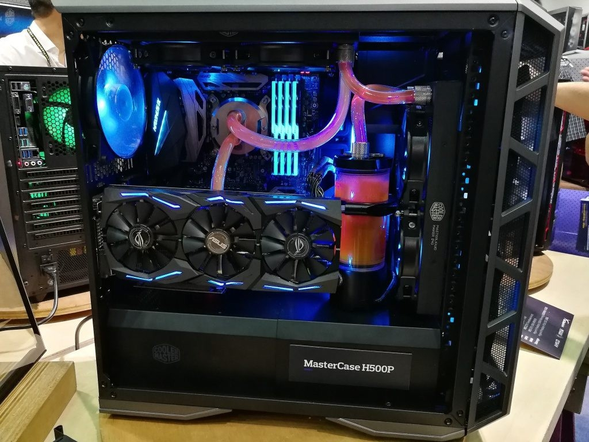
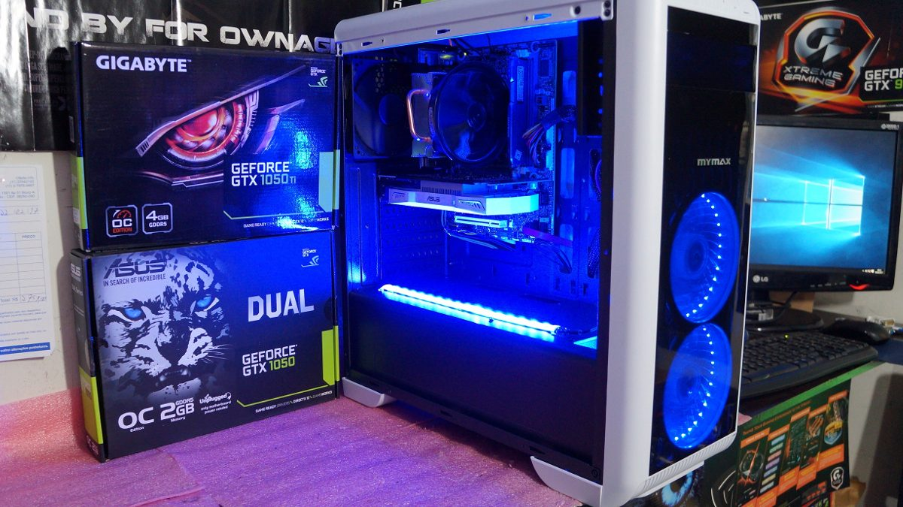
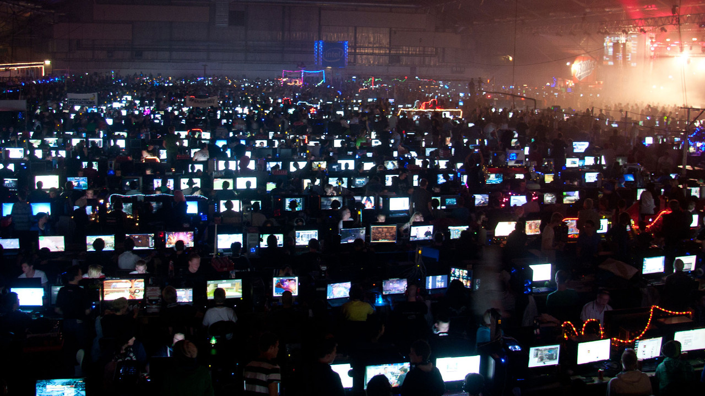

Gamer PC
A következő generációs konzolok már a kanyarban vannak, ám nem vagyunk maradéktalanul elragadtatva attól, amit eddig láttunk. Mindkét gép esetében könnyű kivetnivalót találni, legyen szó az árról, a vásárlókkal szembeni hozzáállásról vagy éppen a visszafele kompatibilitás hiányáról. Mit tegyen tehát az ember, ha már égeti a zsebét 400-500 eurónak megfelelő jó magyar forint, de egyik konzol sem nyerte el a tetszését ilyen vagy olyan okból? A válasz természetesen az, hogy épít egy számítógépet. Egy okosan összeállított Gamer-PC bizonyos esetben még olcsóbb is lehet, mint egy asztali konzol, a teljesítmény terén simán felveszi a versenyt és több lehetőséget biztosít a felhasználó számára, illetve van abban valami semmihez sem hasonlítható, ha mi magunk állítjuk össze a gépet, nem csak levesszük a polcról.
A GAMER-PC ÉPÍTÉS ALAPJAI
Az első lépés a saját Gamer-PC elkészítésében nem lehet más, mint a megfelelő alaplap kiválasztása, hiszen -- ahogy már a neve is mutatja -- ez jelenti a masinánk alapját, amire minden más eszköz csatlakozik. Az alaplap megválasztásakor észben kell tartanunk azt, hogy milyen típusú processzort szeretnénk a gépünkbe pakolni, ugyanis ez szűkíti a kört. Ha meg van a megfelelő foglalat a kívánt központi egységhez, jöhet az, hogy kiválasszuk azt a modellt, ami a további preferenciáinknak felel meg. Itt főleg azt kell néznünk, hogy milyen csatlakozásokra lesz szükségünk: az alapvető dolgok, mint az USB, SATA, hang és egyéb portok mind fontosak, de főleg az az érdekes, hogy hány slot áll rendelkezésre a memóriamodulok számára, s ezek milyen típusú egységet képesek befogadni; fontos az is, hogy a kívánt videokártyának megfelelő helye legyen, illetve a chipset adottságait is javallott átböngészni vásárlás előtt. Az alaplap az elérhető kényelmi funkció és csatlakozófelületek függvényében egészen olcsó és horribilisen drága is lehet, így a Gamer-PC megépítésekor különösen oda kell figyelnünk már itt, az első lépéseknél, hiszen az a pénz, amit itt elverünk a jobb eredmény reményében, hosszú távon nem biztos, hogy kifizetődő lesz; meg kell találni az egyensúlyt.
Az alaplap meghatározása után már valamivel könnyebb a helyzet, hiszen így már behatárolt a memória, a processzor és a videokártya, egyszóval azok a komponensek, amik a legfontosabbak a Gamer-PC által ellátott szerepben. Azzal, hogy megvan az alaplap, automatikusan tudjuk azt is, hogy milyen processzort vehetünk, ám annak ellenére, hogy a támogatott modellek száma jól listázott, ezek közül választani még nem feltétlenül egyszerű. Amire itt különösen oda kell figyelni, az a grafikuskártyával történő megfelelő párosítás, ugyanis az egyik a gyengébb teljesítményével visszahúzhatja a másikat, így az elméletben kiváló értékeket nem élvezhetjük teljes mértékben, ez pedig nyilván azt jelenti, hogy kidobtuk az ablakon a pénzünket. Magyarul nem érdemes a rendelkezésünkre álló keret nagy részét egy csúcskategóriás processzorra költeni, s így arányosan keveset szánni a VGA-ra, illetve a többi alkatrészre, ugyanis a végeredmény csalódást keltő lesz; a helyes út, ha lehetőleg azonos teljesítménykategóriába eső darabokat választunk.
A Gamer-PC megszületéséhez vezető végső, de semmiképpen sem elhanyagolható lépés a ház, a hűtés, valamint a tápegység kiválasztása. A tápegység fontosságát azt hiszem, nem kell magyarázni, hiszen ennek hibás megválasztása azt jelenti, hogy szimplán nem indul el a gépünk. Figyeljük tehát oda az egyes komponensek fogyasztására, s ennek megfelelően válasszuk ki a tápot, mely inkább legyen drágább egy kicsivel, de ne egy olcsó, ismeretlen márkára bízzuk a gépünket. Ugyanilyen fontos a hűtés megválasztása: ha komoly használatot célzunk meg, s még tuningolni is szeretnénk, a referenciahűtés elfelejthető, helyette egy nagy dögöt érdemes választani, ami a még mostanában jelentkező kánikulában is hűvösen tartja a masinánkat. Ehhez kapcsolódik a ház kérdése is, ami nem csupán esztétikai célt szolgál, hiszen egy jó kialakítás még javíthat is a hűtés hatásfokán -- természetesen arról se feledkezzünk el, hogy az alaplap és a beleillesztett alkatrészek méreteihez passzoló házat válasszunk, illetve ügyeljünk a precíz kábelezésre is.
Kész a Gamer-PC, azonban még nem dőlhetünk hátra, ugyanis monitor, egér és billentyűzet nincs, a hangszórókról nem is beszélve -- ha van elég költőpénzünk, ezekkel is foglalkozzunk. A monitor kérdéskörében az a legfontosabb, hogy mivel főleg játékra fogjuk használni a masinát, lehetőleg minél alacsonyabb legyen a válaszideje, s minél magasabb a képfrissítés. Az egér vásárlása esetén arra kell figyelni, hogy minél érzékenyebb legyen, ez ugyanis döntő lehet egy online küzdelem során. Mindezekhez képest a billentyűzet már mellékesnek nevezhető, hiszen igazából annyi a követelmény ezzel kapcsolatban, hogy minél több programozható gomb legyen, ám ezek nélkül is vidáman el lehet boldogulni. A hangrendszer tekintetében pedig mindenkinek szíve joga, hogy mit vesz, ez már nem szól bele a teljesítménybe, s egy bizonyos szinttől a játékélménybe sem nagyon: a teljes gép ára, vagy még annál is több elkölthető egy hangrendszerre, de jobb ettől már nem leszel.
Ajánlott alaplapok:
- MSI alaplapok
- MSI X399 Gaming Pro Carbon AC alaplap
- MSI X299 Raider alaplap
- Asrock alaplapok
- Asrock 970M Pro3 alaplap
- Asrock 970 Pro3 R2.0 alaplap
- Gigabyte alaplapok
- Gigabyte GA-B250M-DS3H alaplap
- Gigabyte GA-B250M-D3H alaplap
- Gigabyte Z270-Gaming K3 alaplap